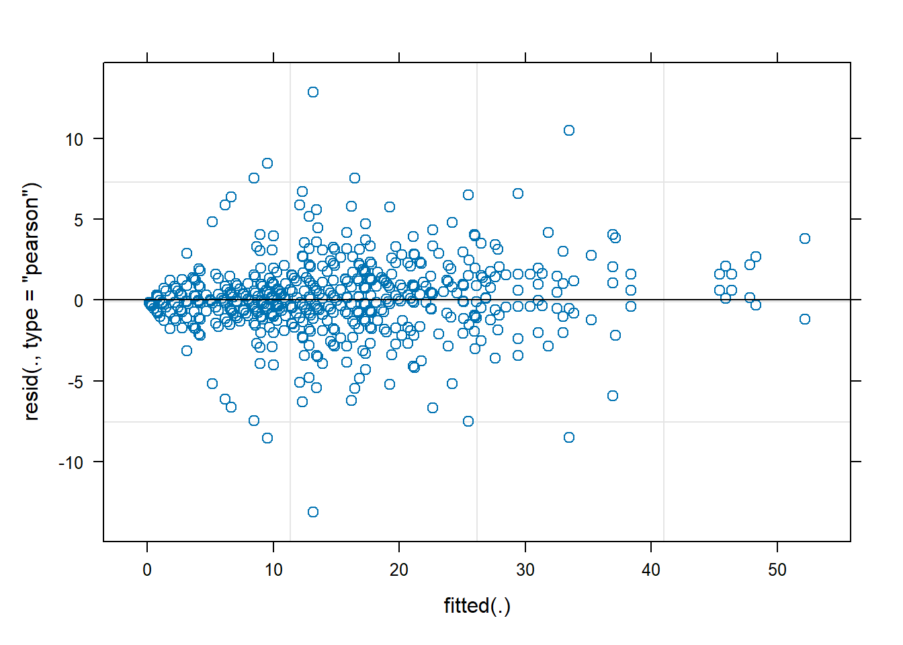
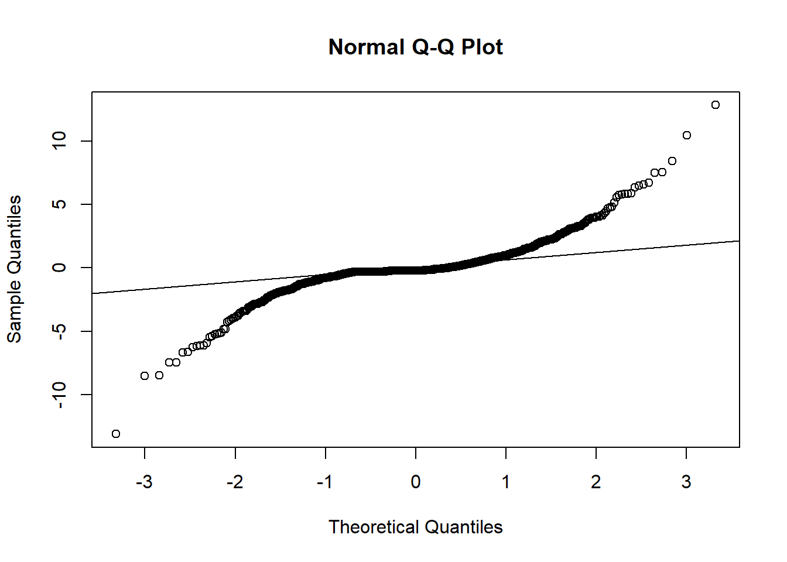
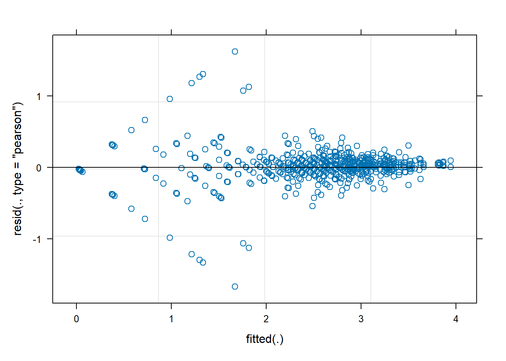
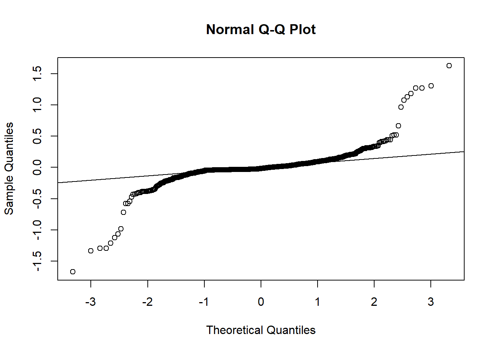

## Load the data for egg count
egg_rep <- read.table(file=file.path(here::here(), "data", "raw_data", "egg_count_repeatability_all.csv"), sep = ",", header=TRUE)
##Filter rep 1 and rep2
egg_rep12 <- egg_rep %>% dplyr::filter(Replicate %in% c(1, 2)) %>% dplyr::select(Batch, PetriNumber, Replicate, EggCount) %>% tidyr::pivot_wider(names_from = Replicate, values_from = EggCount, names_prefix = "Rep")
## Plot correlation between two observations
plot_egg_rep12 <-ggplot2::ggplot(egg_rep12, ggplot2::aes(x = Rep1, y = Rep2, colour = as.factor(Batch))) + ggplot2::geom_point(alpha = 0.6) + ggplot2::geom_abline(intercept = 0, slope = 1, linetype = "dashed") + ggplot2::labs(x = "First egg count", y = "Second egg count", colour = "Batch") + ggplot2::theme_classic()
ggplot2::ggsave(here::here("plots", "egg_count_rep1_rep2.pdf"), plot = plot_egg_rep12, width = 6, height = 5)
##Filter rep 1 and rep3
egg_rep13 <- egg_rep %>% dplyr::filter(Replicate %in% c(1, 3)) %>% dplyr::select(Batch, PetriNumber, Replicate, EggCount) %>% tidyr::pivot_wider(names_from = Replicate, values_from = EggCount, names_prefix = "Rep") %>% dplyr::filter(!is.na(Rep1), !is.na(Rep3))
plot_egg_rep13 <- ggplot2::ggplot(egg_rep13, ggplot2::aes(x = Rep1, y = Rep3, colour = as.factor(Batch))) + ggplot2::geom_point(alpha = 0.6) + ggplot2::geom_abline(intercept = 0, slope = 1, linetype = "dashed") + ggplot2::labs(x = "First egg count", y = "Third egg count", colour = "Batch") + ggplot2::theme_classic()
ggplot2::ggsave(here::here("plots", "egg_count_rep1_rep3.pdf"), plot = plot_egg_rep13, width = 6, height = 5)Repeatability_analysis
#Repeatability for egg count #Import data
#Calculate egg count repeatability for all the data
# Batch as a factor
egg_rep <- egg_rep %>% dplyr::mutate(Batch = as.factor(Batch), PetriNumber = as.factor(PetriNumber))
# Mixed model
m_rep_eggs <- lme4::lmer(EggCount ~ Batch + (1 | PetriNumber), data = egg_rep)
# Model summary
summary(m_rep_eggs)Linear mixed model fit by REML ['lmerMod']
Formula: EggCount ~ Batch + (1 | PetriNumber)
Data: egg_rep
REML criterion at convergence: 8742.6
Scaled residuals:
Min 1Q Median 3Q Max
-7.3705 -0.2093 -0.0443 0.2369 7.3533
Random effects:
Groups Name Variance Std.Dev.
PetriNumber (Intercept) 129.068 11.361
Residual 3.118 1.766
Number of obs: 1466, groups: PetriNumber, 649
Fixed effects:
Estimate Std. Error t value
(Intercept) 14.2732 0.7552 18.900
Batch4 1.4037 1.3692 1.025
Batch5 -2.9303 1.2003 -2.441
Batch6 -3.6732 2.2191 -1.655
Batch7 -4.7018 2.0743 -2.267
Batch8 -1.7476 1.8612 -0.939
Batch9 2.5638 1.6550 1.549
Correlation of Fixed Effects:
(Intr) Batch4 Batch5 Batch6 Batch7 Batch8
Batch4 -0.552
Batch5 -0.629 0.347
Batch6 -0.340 0.188 0.214
Batch7 -0.364 0.201 0.229 0.124
Batch8 -0.406 0.224 0.255 0.138 0.148
Batch9 -0.456 0.252 0.287 0.155 0.166 0.185# Variance components
vc_eggs <- as.data.frame(lme4::VarCorr(m_rep_eggs))
# Calculate repeatability (ICC)
VarAmong_eggs <- vc_eggs$vcov[vc_eggs$grp == "PetriNumber"]
VarWithin_eggs <- vc_eggs$vcov[vc_eggs$grp == "Residual"]
R_eggs <- VarAmong_eggs / (VarAmong_eggs + VarWithin_eggs)
R_eggs[1] 0.9764103plot(m_rep_eggs)
qqnorm(resid(m_rep_eggs))
qqline(resid(m_rep_eggs))
#Log transformation
m_rep_eggs_log <- lme4::lmer(log(EggCount + 1) ~ Batch + (1 | PetriNumber), data = egg_rep)
summary(m_rep_eggs_log)Linear mixed model fit by REML ['lmerMod']
Formula: log(EggCount + 1) ~ Batch + (1 | PetriNumber)
Data: egg_rep
REML criterion at convergence: 1903.1
Scaled residuals:
Min 1Q Median 3Q Max
-10.2361 -0.1341 -0.0045 0.1903 10.1640
Random effects:
Groups Name Variance Std.Dev.
PetriNumber (Intercept) 1.3444 1.1595
Residual 0.0261 0.1616
Number of obs: 1466, groups: PetriNumber, 649
Fixed effects:
Estimate Std. Error t value
(Intercept) 2.25356 0.07699 29.272
Batch4 0.11289 0.13959 0.809
Batch5 -0.23224 0.12236 -1.898
Batch6 -0.35290 0.22622 -1.560
Batch7 -0.56154 0.21145 -2.656
Batch8 -0.15635 0.18978 -0.824
Batch9 0.22471 0.16876 1.332
Correlation of Fixed Effects:
(Intr) Batch4 Batch5 Batch6 Batch7 Batch8
Batch4 -0.552
Batch5 -0.629 0.347
Batch6 -0.340 0.188 0.214
Batch7 -0.364 0.201 0.229 0.124
Batch8 -0.406 0.224 0.255 0.138 0.148
Batch9 -0.456 0.252 0.287 0.155 0.166 0.185plot(m_rep_eggs_log)
qqnorm(resid(m_rep_eggs_log))
qqline(resid(m_rep_eggs_log))
#Calculate intra- and interobserver repeatability
# Intraobserver repeatability
# Select Replicate 1 and Replicate 2 for intra-observer repeatability
egg_intra <- egg_rep %>% dplyr::filter(Replicate %in% c(1, 2)) %>% dplyr::group_by(Batch, PetriNumber) %>% dplyr::filter(dplyr::n() == 2) %>% dplyr::ungroup()
# Check that Replicate 1 and Replicate 2 were counted by the same observer
egg_intra_check <- egg_intra %>% dplyr::group_by(Batch, PetriNumber) %>% dplyr::summarise(n_observers = dplyr::n_distinct(Observer), .groups = "drop")
table(egg_intra_check$n_observers) #45 pairs where observers are different
1 2
490 45 # Filter 45 pairs
egg_intra <- egg_rep %>% dplyr::filter(Replicate %in% c(1, 2)) %>% dplyr::group_by(Batch, PetriNumber) %>% dplyr::filter(dplyr::n() == 2, dplyr::n_distinct(Observer) == 1) %>% dplyr::ungroup()
nrow(egg_intra)[1] 980dplyr::n_distinct(egg_intra$PetriNumber)[1] 490# Model with Batch effect and log transformation
m_intra_eggs <- lme4::lmer(log(EggCount + 1) ~ Batch + (1 | PetriNumber), data = egg_intra)
# Calculate repeatability
vc_intra <- as.data.frame(lme4::VarCorr(m_intra_eggs))
VarAmong_intra <- vc_intra$vcov[vc_intra$grp == "PetriNumber"]
VarWithin_intra <- vc_intra$vcov[vc_intra$grp == "Residual"]
R_intra <- VarAmong_intra / (VarAmong_intra + VarWithin_intra)
R_intra[1] 0.9902957# 95% confidence interval
#Function
icc_fun <- function(model) { vc <- as.data.frame(lme4::VarCorr(model)); va <- vc$vcov[vc$grp == "PetriNumber"]; vw <- vc$vcov[vc$grp == "Residual"]; va / (va + vw) }
set.seed(123)
boot_intra <- lme4::bootMer(m_intra_eggs, FUN = icc_fun, nsim = 500, type = "parametric")
CI_intra <- quantile(boot_intra$t, c(0.025, 0.975))
CI_intra 2.5% 97.5%
0.9885159 0.9918420 write.csv(egg_intra, file = here::here("data", "derived_data", "egg_count_intra_repeatability.csv"), row.names = FALSE)
# Write a table with repeatability and 95%CI
repeatability_results <- data.frame(Trait = "Egg count", Type = "Intra-observer", N_measurements = nrow(egg_intra), N_Petri = dplyr::n_distinct(egg_intra$PetriNumber), R = R_intra, CI_low = NA, CI_high = NA)
CI_intra <- quantile(boot_intra$t, c(0.025, 0.975))
repeatability_results$CI_low <- CI_intra[1]
repeatability_results$CI_high <- CI_intra[2]
# Count inter-observer repeatability
inter_12 <- egg_rep %>% dplyr::filter(Replicate %in% c(1, 2)) %>% dplyr::group_by(Batch, PetriNumber) %>% dplyr::filter(dplyr::n() == 2, dplyr::n_distinct(Observer) == 2) %>% dplyr::ungroup()
inter_13 <- egg_rep %>% dplyr::filter(Replicate %in% c(1, 3)) %>% dplyr::group_by(Batch, PetriNumber) %>% dplyr::filter(dplyr::n() == 2, dplyr::n_distinct(Observer) == 2) %>% dplyr::ungroup()
#Check the same PetriDishes in replicates
intersect(inter_12$PetriNumber, inter_13$PetriNumber) [1] "10001" "10002" "10003" "10004" "10005" "10059" "10060" "10061" "10062"
[10] "10063" "10161" "10162" "10163" "10164" "10165" "10659" "10660" "10661"
[19] "10662" "10663" "11148" "11149" "11150" "11151" "11152"#Remove PetriDishes which are the same (25 Petri Dishes)
inter_13 <- inter_13 %>% dplyr::filter(!PetriNumber %in% inter_12$PetriNumber)
intersect(inter_12$PetriNumber, inter_13$PetriNumber) #should be 0character(0)egg_inter <- dplyr::bind_rows(inter_12, inter_13)
write.csv(egg_inter, file = here::here("data", "derived_data", "egg_count_inter_repeatability.csv"), row.names = FALSE)
# Use model which includes Batch and Observer effects and log transformation (it is impossible to include Batch effect as Batch and observer are confounded)
m_inter_eggs <- lme4::lmer(log(EggCount + 1) ~ Observer + (1 | PetriNumber), data = egg_inter)
vc_inter <- as.data.frame(lme4::VarCorr(m_inter_eggs))
VarAmong_inter <- vc_inter$vcov[vc_inter$grp == "PetriNumber"]
VarWithin_inter <- vc_inter$vcov[vc_inter$grp == "Residual"]
R_inter <- VarAmong_inter / (VarAmong_inter + VarWithin_inter)
R_inter[1] 0.9861098# Confidence interval for the repeatability
set.seed(123)
boot_inter <- lme4::bootMer(m_inter_eggs, FUN = icc_fun, nsim = 500, type = "parametric")
CI_inter <- quantile(boot_inter$t, c(0.025, 0.975))
CI_inter 2.5% 97.5%
0.9807418 0.9903157 # Add inter-observer repeatability and 95% CI to the table
repeatability_results <- dplyr::bind_rows(repeatability_results, data.frame(Trait = "Egg count", Type = "Inter-observer", N_measurements = nrow(egg_inter), N_Petri = dplyr::n_distinct(egg_inter$PetriNumber), R = R_inter, CI_low = CI_inter[1], CI_high = CI_inter[2]))
rownames(repeatability_results) <- NULLRepeatability for larvae count
Import data
# Repeatability for larval count
# Import data
## Load the data for larval count
larvae_rep <- read.table(file=file.path(here::here(), "data", "raw_data", "larvae_count_repeatability_all.csv"), sep = ",", header=TRUE) %>% dplyr::filter(!is.na(Observer))
## Filter rep 1 and rep2
larvae_rep12 <- larvae_rep %>% dplyr::filter(Replicate %in% c(1, 2)) %>% dplyr::select(Batch, PetriNumber, Replicate, LarvaeCount) %>% tidyr::pivot_wider(names_from = Replicate, values_from = LarvaeCount, names_prefix = "Rep") %>% dplyr::filter(!is.na(Rep1), !is.na(Rep2))
## Plot correlation between two observations
plot_larvae_rep12 <- ggplot2::ggplot(larvae_rep12, ggplot2::aes(x = Rep1, y = Rep2, colour = as.factor(Batch))) + ggplot2::geom_point(alpha = 0.6) + ggplot2::geom_abline(intercept = 0, slope = 1, linetype = "dashed") + ggplot2::labs(x = "First larval count", y = "Second larval count", colour = "Batch") + ggplot2::theme_classic()
ggplot2::ggsave(here::here("plots", "larvae_count_rep1_rep2.pdf"), plot = plot_larvae_rep12, width = 6, height = 5)
## Filter rep 1 and rep3
larvae_rep13 <- larvae_rep %>% dplyr::filter(Replicate %in% c(1, 3)) %>% dplyr::select(Batch, PetriNumber, Replicate, LarvaeCount) %>% tidyr::pivot_wider(names_from = Replicate, values_from = LarvaeCount, names_prefix = "Rep") %>% dplyr::filter(!is.na(Rep1), !is.na(Rep3))
plot_larvae_rep13 <- ggplot2::ggplot(larvae_rep13, ggplot2::aes(x = Rep1, y = Rep3, colour = as.factor(Batch))) + ggplot2::geom_point(alpha = 0.6) + ggplot2::geom_abline(intercept = 0, slope = 1, linetype = "dashed") + ggplot2::labs(x = "First larval count", y = "Third larval count", colour = "Batch") + ggplot2::theme_classic()
ggplot2::ggsave(here::here("plots", "larvae_count_rep1_rep3.pdf"), plot = plot_larvae_rep13, width = 6, height = 5)Calculate larvae count repeatability for all the data
# Batch and PetriNumber as factors
larvae_rep <- larvae_rep %>% dplyr::mutate(Batch = as.factor(Batch), PetriNumber = as.factor(PetriNumber))
# Mixed model
m_rep_larvae <- lme4::lmer(LarvaeCount ~ Batch + (1 | PetriNumber), data = larvae_rep)
# Model summary
summary(m_rep_larvae)Linear mixed model fit by REML ['lmerMod']
Formula: LarvaeCount ~ Batch + (1 | PetriNumber)
Data: larvae_rep
REML criterion at convergence: 6906.7
Scaled residuals:
Min 1Q Median 3Q Max
-5.5387 -0.1363 -0.0844 0.1912 5.4288
Random effects:
Groups Name Variance Std.Dev.
PetriNumber (Intercept) 90.12 9.493
Residual 5.62 2.371
Number of obs: 1115, groups: PetriNumber, 520
Fixed effects:
Estimate Std. Error t value
(Intercept) 10.68667 0.78711 13.577
Batch4 -0.09381 1.39539 -0.067
Batch5 -3.62711 1.11462 -3.254
Batch6 -6.28667 2.10930 -2.980
Batch7 -4.12952 1.80961 -2.282
Batch8 -0.86370 1.63339 -0.529
Batch9 6.62363 1.61973 4.089
Correlation of Fixed Effects:
(Intr) Batch4 Batch5 Batch6 Batch7 Batch8
Batch4 -0.564
Batch5 -0.706 0.398
Batch6 -0.373 0.210 0.264
Batch7 -0.435 0.245 0.307 0.162
Batch8 -0.482 0.272 0.340 0.180 0.210
Batch9 -0.486 0.274 0.343 0.181 0.211 0.234# Variance components
vc_larvae <- as.data.frame(lme4::VarCorr(m_rep_larvae))
# Calculate repeatability (ICC)
VarAmong_larvae <- vc_larvae$vcov[vc_larvae$grp == "PetriNumber"]
VarWithin_larvae <- vc_larvae$vcov[vc_larvae$grp == "Residual"]
R_larvae <- VarAmong_larvae / (VarAmong_larvae + VarWithin_larvae)
R_larvae[1] 0.9413005plot(m_rep_larvae)
qqnorm(resid(m_rep_larvae))
qqline(resid(m_rep_larvae))
# Log transformation
m_rep_larvae_log <- lme4::lmer(log(LarvaeCount + 1) ~ Batch + (1 | PetriNumber), data = larvae_rep)
summary(m_rep_larvae_log)Linear mixed model fit by REML ['lmerMod']
Formula: log(LarvaeCount + 1) ~ Batch + (1 | PetriNumber)
Data: larvae_rep
REML criterion at convergence: 2188.4
Scaled residuals:
Min 1Q Median 3Q Max
-6.3051 -0.1550 -0.0681 0.1957 6.1325
Random effects:
Groups Name Variance Std.Dev.
PetriNumber (Intercept) 1.48254 1.218
Residual 0.07022 0.265
Number of obs: 1115, groups: PetriNumber, 520
Fixed effects:
Estimate Std. Error t value
(Intercept) 1.77585 0.10059 17.655
Batch4 0.10577 0.17832 0.593
Batch5 -0.32876 0.14245 -2.308
Batch6 -0.78110 0.26875 -2.906
Batch7 -0.36830 0.23126 -1.593
Batch8 -0.05417 0.20889 -0.259
Batch9 0.86099 0.20714 4.157
Correlation of Fixed Effects:
(Intr) Batch4 Batch5 Batch6 Batch7 Batch8
Batch4 -0.564
Batch5 -0.706 0.398
Batch6 -0.374 0.211 0.264
Batch7 -0.435 0.245 0.307 0.163
Batch8 -0.482 0.272 0.340 0.180 0.209
Batch9 -0.486 0.274 0.343 0.182 0.211 0.234plot(m_rep_larvae_log)
qqnorm(resid(m_rep_larvae_log))
qqline(resid(m_rep_larvae_log))
Calculate intra- repeatability for larvae
# Select Replicate 1 and Replicate 2
larvae_intra <- larvae_rep %>% dplyr::filter(Replicate %in% c(1, 2)) %>% dplyr::group_by(Batch, PetriNumber) %>% dplyr::filter(dplyr::n() == 2) %>% dplyr::ungroup()
# Check observers
larvae_intra_check <- larvae_intra %>% dplyr::group_by(Batch, PetriNumber) %>% dplyr::summarise(n_observers = dplyr::n_distinct(Observer), .groups = "drop")
table(larvae_intra_check$n_observers) #59 pairs where observers are different
1 2
445 34 # Keep only pairs counted by the same observer
larvae_intra <- larvae_rep %>% dplyr::filter(Replicate %in% c(1, 2)) %>% dplyr::group_by(Batch, PetriNumber) %>% dplyr::filter(dplyr::n() == 2, dplyr::n_distinct(Observer) == 1) %>% dplyr::ungroup()
nrow(larvae_intra)[1] 890dplyr::n_distinct(larvae_intra$PetriNumber)[1] 445# Model with Batch effect and log transformation
m_intra_larvae <- lme4::lmer(log(LarvaeCount + 1) ~ Batch + (1 | PetriNumber), data = larvae_intra)
# Calculate repeatability
vc_intra_larvae <- as.data.frame(lme4::VarCorr(m_intra_larvae))
VarAmong_intra_larvae <- vc_intra_larvae$vcov[vc_intra_larvae$grp == "PetriNumber"]
VarWithin_intra_larvae <- vc_intra_larvae$vcov[vc_intra_larvae$grp == "Residual"]
R_intra_larvae <- VarAmong_intra_larvae / (VarAmong_intra_larvae + VarWithin_intra_larvae)
R_intra_larvae[1] 0.9559357# 95% confidence interval
set.seed(123)
boot_intra_larvae <- lme4::bootMer(m_intra_larvae, FUN = icc_fun, nsim = 500, type = "parametric")
CI_intra_larvae <- quantile(boot_intra_larvae$t, c(0.025, 0.975))
CI_intra_larvae 2.5% 97.5%
0.9468531 0.9635941 write.csv(larvae_intra, file = here::here("data", "derived_data", "larvae_count_intra_repeatability.csv"), row.names = FALSE)
# Add intra-observer larvae repeatability to the table
repeatability_results <- dplyr::bind_rows(repeatability_results, data.frame(Trait = "Larval count", Type = "Intra-observer", N_measurements = nrow(larvae_intra), N_Petri = dplyr::n_distinct(larvae_intra$PetriNumber), R = R_intra_larvae, CI_low = unname(CI_intra_larvae[1]), CI_high = unname(CI_intra_larvae[2])))Calculate inter-observer repeatability for larvae
# Replicate 1 vs Replicate 2 counted by different observers
inter_larvae_12 <- larvae_rep %>% dplyr::filter(Replicate %in% c(1, 2)) %>% dplyr::group_by(Batch, PetriNumber) %>% dplyr::filter(dplyr::n() == 2, dplyr::n_distinct(Observer) == 2) %>% dplyr::ungroup()
# Replicate 1 vs Replicate 3 counted by different observers
inter_larvae_13 <- larvae_rep %>% dplyr::filter(Replicate %in% c(1, 3)) %>% dplyr::group_by(Batch, PetriNumber) %>% dplyr::filter(dplyr::n() == 2, dplyr::n_distinct(Observer) == 2) %>% dplyr::ungroup()
# Check the same Petri dishes in both datasets
intersect(inter_larvae_12$PetriNumber, inter_larvae_13$PetriNumber)character(0)# Combine independent inter-observer pairs
larvae_inter <- dplyr::bind_rows(inter_larvae_12, inter_larvae_13)
#Check if there are two replicates for each Petri Dish
larvae_inter %>% dplyr::count(Batch, PetriNumber) %>% dplyr::count(n)# A tibble: 1 × 2
n nn
<int> <int>
1 2 95write.csv(larvae_inter, file = here::here("data", "derived_data", "larvae_count_inter_repeatability.csv"), row.names = FALSE)
# Model with Observer effect and log transformation
m_inter_larvae <- lme4::lmer(log(LarvaeCount + 1) ~ Observer + (1 | PetriNumber), data = larvae_inter)
vc_inter_larvae <- as.data.frame(lme4::VarCorr(m_inter_larvae))
VarAmong_inter_larvae <- vc_inter_larvae$vcov[vc_inter_larvae$grp == "PetriNumber"]
VarWithin_inter_larvae <- vc_inter_larvae$vcov[vc_inter_larvae$grp == "Residual"]
R_inter_larvae <- VarAmong_inter_larvae / (VarAmong_inter_larvae + VarWithin_inter_larvae)
R_inter_larvae[1] 0.9323908# Confidence interval
set.seed(123)
boot_inter_larvae <- lme4::bootMer(m_inter_larvae, FUN = icc_fun, nsim = 500, type = "parametric")
CI_inter_larvae <- quantile(boot_inter_larvae$t, c(0.025, 0.975))
CI_inter_larvae 2.5% 97.5%
0.8991576 0.9529363 ##Add to the table
repeatability_results <- dplyr::bind_rows(repeatability_results, data.frame(Trait = "Larval count", Type = "Inter-observer", N_measurements = nrow(larvae_inter), N_Petri = dplyr::n_distinct(larvae_inter$PetriNumber), R = R_inter_larvae, CI_low = unname(CI_inter_larvae[1]), CI_high = unname(CI_inter_larvae[2])))
write.csv(repeatability_results, file = here::here("data", "derived_data", "count_repeatability_results.csv"), row.names = FALSE)